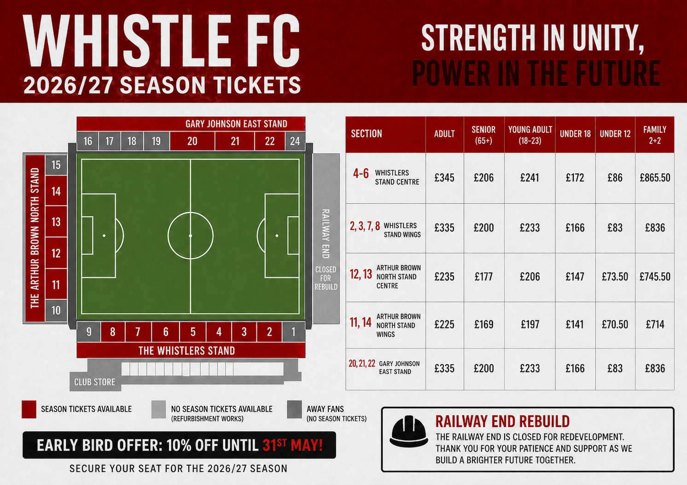

Following our final home game of the 2025/26 season, Whistle Football Club are delighted to launch Season Tickets for the upcoming 2026/27 campaign.
With one final match still to come and the race for the play-off places going right to the wire, supporters have once again shown incredible passion, loyalty and belief throughout the season.
As attention begins to turn towards another exciting chapter, fans can now secure their place at the heart of the action for next season.

The club has worked hard to keep prices affordable, with only a slight increase across most categories, while Family 2+2 Season Tickets remain frozen at last season’s prices.
Supporters can also take advantage of our Early Bird Offer of 10% off until 31st May, giving fans the best possible value when booking early.
Due to the exciting redevelopment of the Railway End, Season Tickets in that stand will not be available for the 2026/27 season while works are completed.
Sections 16, 17, 18 and 19 will continue to be designated for away supporters, while selected seats in other areas will be unavailable during refurbishment improvements around the stadium.

Whether you have backed the club for years or are looking to join us for the first time, there has never been a better moment to be part of the journey.
The atmosphere inside the ground this season has been outstanding, and with the club continuing to move forward on and off the pitch, we want even more supporters with us next year.
We thank every supporter for their magnificent backing throughout this season — and ahead of our final game, your support could make all the difference as we chase down a play-off place.
Fortitudo in Unitate. Potestas in Futuro.